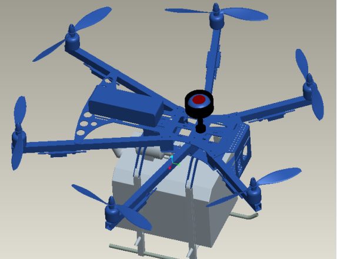

整机结构设计与布局
基于农田场景对携带性、作业续航与平台稳定性的综合要求，设计结构围绕"轻量化+可折叠+易维护"目标展开，采用中置下沉式电池舱、可拆卸机臂与可拓展传感器仓布置方式，全面提升整机适应性。
重要内容
- 空载整机质量控制在≤2.8kg，碳纤维T700材质为主体承重框架；
- 采用380×300×120mm折叠尺寸，满足单兵背负携行限制；
- 电池仓中置下沉式布局，重心靠近中心板下缘，提升悬停稳定性；
- 钛合金双折叠铰链机构，复位精度±0.2°，可靠性通过3h振动台验证；
- 各部件结构接口标准化设计，支持后期多光谱/热成像/RTK模组接入。
结构仿真与安全性评估
针对飞行过程中面临的多维载荷、频率响应、气动干扰与跌落冲击等复杂因素，构建涵盖静力/模态/CFD/冲击等模块的多物理场仿真体系，进行飞行安全性与强度稳定性评估。
重要内容
- 静力分析基准：1.5G工况下结构安全系数≥2.0，实测为2.1；
- 模态仿真避开电机共振区（目标>400Hz），一阶频率为452Hz；
- 气动优化采用Fluent流场仿真，外形阻力系数下降18%；
- 冲击仿真基于LS-DYNA平台，模拟1.5m自然落地情形，最大应力低于屈服极限60%；
- 重点结构如电机座、折叠铰链区设局部加强结构并同步验证螺栓承载力与热胀预留。
耐久性设计与三防处理
针对农业作业中的重复折叠、泥沙侵蚀与高温高湿环境，开展抗疲劳结构细化设计与三防处理，提升无人机在全周期内的可靠运行能力。
重要内容
- 关键节点疲劳设计寿命≥2000次折叠循环，实测达到2500次；
- 起落架防泥陷结构接地面积增加30%，有效避免陷入湿地；
- 电子舱结构等级为IP67，采用双道O型圈+防水透气阀；
- 表面涂层选用聚氨酯喷涂+金属件微弧氧化，通过96h盐雾试验验证；
- 散热系统优化后电机在35°C环境下作业温度下降至≤58°C。
原型测试与结构迭代
通过实验室结构刚度/振动谱测试与田间环境实飞测试，评估整机性能指标并基于测试数据驱动结构迭代优化，提升系统性能与量产适配度。
重要内容
- X/Y/Z三向刚度测试：目标≥180N/mm，实测X向185、Y向210、Z向152（Z向后续加筋）；
- 振动谱传递函数覆盖50–500Hz频段，无共振点重叠峰值；
- 野外测试场景涵盖泥泞地起降、高温照射与果树穿行，暴露问题并完成3项结构修改；
- 结构迭代通过仿真-验证-重构闭环，最终实测抗风等级达7级（13.8m/s紊流场测试）。
成本优化与量产适配
在确保性能指标满足基础上，开展结构BOM精简、标准件归类与国产替代，控制结构件总成本在可量产范围内，满足产业化推广预期。
重要内容
- 碳纤维改为国产T700替代东丽碳布，刚度差异<3%，单价下降21%；
- 钛合金折叠件由原CNC改为批量铸造，良率>85%，成本下降34%；
- 公差标准宽松至±0.15mm，降低CNC工时约18%；
- 螺钉统一为M3规格，标准件型号压缩至3种，便于装配与库存管理；
- 最终结构总成本为3050元，低于目标上限3200元。